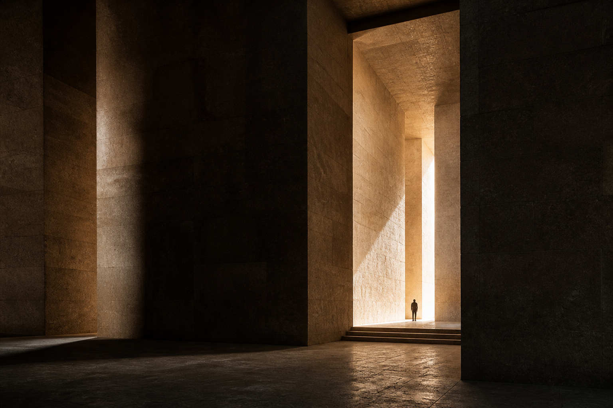

EVE
™
Strategic & Operational Architecture / Enterprise Viability Engine

Lo que sostiene
no siempre se ve.
Una forma distinta de mirar.
Hola, Gaby Johnson.
Cerrar sesión
[ Comienza tu levantamiento ]
¿Desde qué lugar participas normalmente en la empresa?
Soy dueño/a, socio/a o parte de la dirección general.
Estoy a cargo o dirijo un área.
Superviso o coordino el trabajo de otras personas.
Analizo información, datos o procesos de la empresa.
Apoyo en administración, ventas, producción, atención o soporte.
Participo como externo, asesor o proveedor.
Otro.
¿Qué tan cerca estás de las decisiones?
Las tomo directamente
Participo en decidirlas
Las propongo o las preparo
Las ejecuto cuando ya fueron decididas
Las vivo como impacto, pero no participo mucho en decidirlas